这篇文章主要介绍的内容为：
- 逻辑回归的算法介绍
- 逻辑回归的数学原理
- h函数相关
- j函数相关
- 逻辑回归的实际应用
- 逻辑回归的总结
- 网络安全场景不负责预测
- 参考内容
逻辑回归的算法介绍
逻辑回归（Logistic regression）是机器学习分类算法的其中一种，核心思想是利用现有数据对分类边界建立回归方程，以此进行分类。回归可以理解为最佳拟合，是一种选择最优分类的算法。
逻辑归回中会有一些新词汇需要理解。
- h函数： 根据输入的数据预测类别的函数，Andrew Ng的公开课中称为hypothesis function。
- j函数： 我们需要一个机制去评估我们的h函数的好坏,j函数的作用是评估h函数的好坏,一般这个函数称为损失函数(loss function)或者错误函数(error function)。
逻辑回归的数学原理
h函数相关（预测函数）
首先，我们先看看逻辑回归的预测函数，h函数！
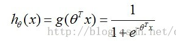
其中含有θ (又称：theta)的变量为（当x0=1时，可以进行矩阵变换）：
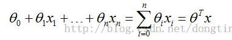
h函数的原型函数为sigmoid函数，展示如下：
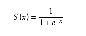
sigmoid方程的图形如下，sigmoid函数的取值范围为 (0,1)
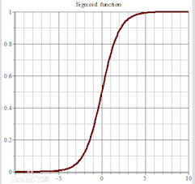
这里进行下小结，逻辑回归的预测函数使用sigmoid函数作为原型函数，然后对sigmoid函数的x进行替换，替换为一个多元一次方程。其中多元一次方程的θ为我要寻找最优组合的内容。
j函数相关
j函数的目标就是找到一组最佳θ，使得J(θ)的值最小。
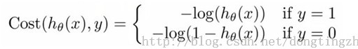
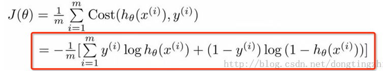
我们可以利用梯度下降算法来求得J(θ)的值最小，根据梯度下降法可得θ的更新过程。j=0 时，代表更新j向量的第0分量，j=1 时，代表更新j向量的第1分量，以此类推，为了方便理解，可以把j看成数组vector_j，j=0，就是更新vector_j[0]。α为学习步长。
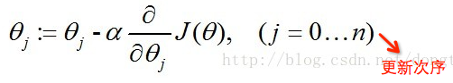
经过一些数学推导的最终形式如下（推导过程为对θ求偏导数）。
ps：xj为x向量的第j分量，还可以理解为x数组的第j项，其实下图是对θ数组的第j项进行更新的算式，然而真正代码角度是对整个θ数组进行更新，也就是下下图的样子。
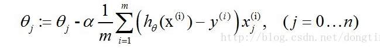
当我们把上式向量化处理就得到了代码可以处理的形式。
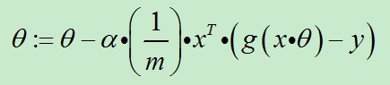
对比着代码看（代码出自《机器学习实战》）
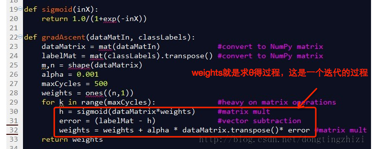
这里进行下小结，我们为了寻找最佳的θ组合，设置了J(θ)函数，我们利用已知数据（建模的训练数据）来寻找最优的θ组合使得J(θ)最小，而我们找最优θ组合的算法为梯度下降算法。
逻辑回归的实际应用
目前单机使用机器学习算法的python库为sklearn库，实例如下。
使用该模型，需要手工调整函数的参数，这个需要对算法进行理解。
|
|
输出结果为
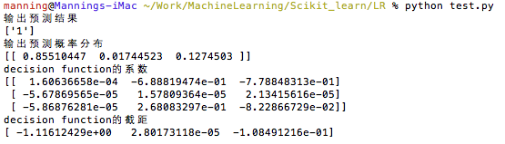
逻辑回归的总结
Logistic Regression算法作为一个二分类算法，主要解决的是线性可分的问题，对于多分类算法，可以利用Softmax Regression算法。
Softmax Regression是一般化的Logistic Regression，可以把Logistic Regression看成Softmax Regression的特例。
那么Softmax Regression和Logistic Regression该怎么选择呢？参考Stanford的文章的内容。
|
|
网络安全场景不负责预测
逻辑回归算法作为一个二分类机器学习算法，主要优势是学习速度快，算法好理解，预测速度快等特点，并且神经网络在神经元上也是采用的是逻辑回归算法，因此在这个深度学习的大背景下，安全人员还是要学习逻辑回归算法。
对于在安全攻防上使用逻辑回归算法，我们先要明白逻辑回归算法的本质：逻辑回归是分类算法。
吸星是安全在机器学习实践上一个非常好的例子，由于吸星使用的是朴素贝叶斯分类算法，那么吸星能不能使用逻辑回顾呢？效果如何呢？这是值得实践的。
异常流量识别，由于瞬时流量或者流量区间中会存在非常多的属性，而且异常流量识别属于二分类，逻辑回归对于异常流量监测问题，这也是非常值得实践的。
网站异常URL识别，对于一个网站，URL的形式具有一定特征的，那么如果被种植了webshell，那么webshell的URL可能会与正常URL存在差异，因此利用此逻辑回归也是能解决这类问题的。
其实总结起来就是，只要每一条数据可以有多个属性，就可以利用逻辑回归。
参考内容
http://ufldl.stanford.edu/wiki/index.php/Softmax%E5%9B%9E%E5%BD%92